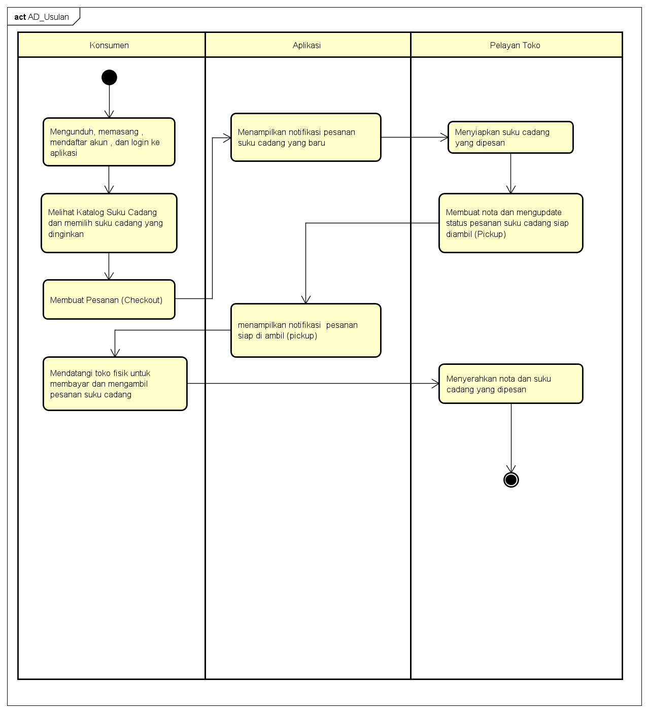

NAMA : Abang Sayyaf Dzulfiqar
NIM : 1811500013
Kelompok: TI6J
Hasil Saya Menyadur Pertemuan ke-3 :
- Pertemuan hari ini masih membahas masalah Activity diagram yang kemarin tetapi dengan usulannya
- Dosen menjelaskan dampak yang positif dari pembuatan aplikasi pemesanan tersebut
- Membuat Activity diagram usulan seperti yang di contohkan oleh dosen
- Penjelasn oleh dosen mengenai alur / cara sebuah proses pemesanan untuk AD ulasan
- Sistem usulan itu harus memperoleh manfaat bagi stakeholder(misalnya:
Pelayan toko dan konsumen), manfaat ini biasanya untuk memudahkan atau memangkas proses bisnis
- Activity diagram digunakan untuk menggambarkan proses bisni bukan detail pada suatu halaman, detail suatu halaman digambarkan menggunakan sequance diagram

Download file latihan astahDisini